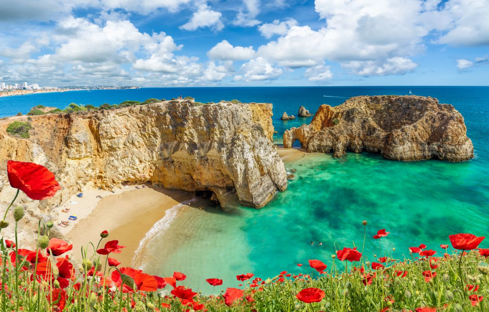

- Hlavní město: Lisabon
- Úřední jazyk: portugalština
- Rozloha: 92 230 km²
- Nejvyšší bod: Ponta do Pico
- Počet obyvatel: 10 467 366
- Státní zřízení: poloprezidentská republika

Portugalsko (portugalsky Portugal), plným názvem Portugalská republika (portugalsky República Portuguesa), je stát ležící na Pyrenejském poloostrově v jihozápadní Evropě, jehož území zahrnuje také makaronéská souostroví Azory a Madeira. Nachází se zde nejzápadnější bod kontinentální Evropy a jeho iberská část hraničí na západě a jihu s Atlantským oceánem a na severu a východě se Španělskem, které jako jediné má s Portugalskem pozemní hranici. Jeho souostroví tvoří dva autonomní regiony s vlastními regionálními vládami. Portugalsko má rozlohu 92 230 km2 a má 10,5 milionů obyvatel. Je unitárním státem a parlamentní demokracií s poloprezidentským systémem. Hlavním a největším městem je Lisabon, následuje Porto, Vila Nova de Gaia a Amadora.
Je to jedna z nejstarších zemí Evropy, přičemž její území bylo nepřetržitě osídlováno, napadáno a bojováno o něj již od pravěku. Území obývaly keltské a iberské národy, například Lusitánci, Galové, Keltové, Turduli a Kinetové. Tyto národy měly obchodní a kulturní kontakty s Féničany, starými Řeky a Kartaginci. Později ho ovládli Římané, následovaly invaze germánských národů (především Svébů a Vizigótů) spolu s Alany a později s Maury, kteří byli nakonec vyhnáni během reconquisty. Země byla založena nejprve jako hrabství v rámci Leónského království v roce 868, oficiální nezávislost jako Portugalské království získala smlouvou ze Zamory v roce 1143.
Portugalsko uskutečnilo četné objevy a námořní průzkumy za hranici severního Atlantiku a v 15. a 16. století vytvořilo jednu z nejdéle existujících námořních a obchodních říší, která se stala jednou z hlavních hospodářských a politických mocností té doby. Na konci 16. století Portugalsko bojovalo se Španělskem ve válce o nástupnictví portugalské koruny, což vedlo ke vzniku Pyrenejské unie. Po období značných portugalských ztrát byl v roce 1640 v důsledku Portugalské restaurační války za samostatnost (Guerra da Restauração) znovunastolen na trůn dynastie Braganzů.
Do počátku 19. století vedla kumulativní krize, události jako lisabonské zemětřesení v roce 1755, okupace země během napoleonských válek a následné vyhlášení nezávislosti Brazílie v roce 1822 k výraznému úpadku dřívějšího portugalského bohatství,po němž následovala občanská válka mezi liberálními konstitucionalisty a konzervativními absolutisty o královské nástupnictví, která probíhala v letech 1828-1834. Revoluce v roce 1910 svrhla staletou portugalskou monarchii a nastolila demokratickou, ale nestabilní První portugalskou republiku, kterou později vystřídal autoritářský režim Estado Novo (Nový stát). Demokracie byla obnovena po karafiátové revoluci (1974), která ukončila portugalskou koloniální válku a nakonec vedla ke ztrátě i zbývajících koloniálních držav.
Portugalsko zanechalo na celém světě hluboký kulturní, architektonický a jazykový vliv a jeho dědictvím je přibližně 250 milionů portugalsky mluvících lidí po celém světě. Je to rozvinutá země s vyspělou ekonomikou, v indexu lidského rozvoje se umístila na 38. místě.Portugalsko je členem Organizace spojených národů, Evropské unie, Schengenského prostoru a Rady Evropy, je také jedním ze zakládajících členů Severoatlantické aliance, eurozóny, Organizace pro hospodářskou spolupráci a rozvoj a Společenství portugalsky mluvících zemí.
Název země vzešel z římského označení Portus Cale. Cale bylo označení původní osady v ústí řeky Douro. Toto území získali kolem roku 200 př. n. l. Římané od Kartága v průběhu Druhé punské války. Vizigóti pak ve středověku upravili název území na Portucale, které později dalo vzniknout jménu Portugale čili Portugalsko. V 9. století pojem Portugalsko zahrnoval území cca mezi řekami Minho a Douro. Z názvu Portucale/Portugale bylo jeho zkrácením odvozeno taktéž dnešní jméno města nacházejícího se na místě přístavu původní osady Cale, tedy Porta.
Region Algarve na jihu Portugalska proslul nádhernými plážemi a skvostnými vlnami, které ho staví do čela evropských surfovacích destinací. Přidejte příjemné letní teploty po většinu roku, malebné vesničky, přírodu i možnosti zábavy a aktivit, a vyjde vám ideální místo pro relaxační dovolenou. Ať už si vyberete historické město Faro nebo některé z příjemných letovisek, určitě nebudete zklamaní.
Ostrov věčného jara Madeira je jedním z autonomních regionů Portugalska. Se svojí nádhernou přírodou, biologickou rozmanitostí, vavřínovými lesy, levádami a mimořádně příjemným klimatem je luxusním tipem na celoroční dovolenou.

Kosmopolitní a pulzující metropole Portugalska Lisabon je okouzlujícím městem s historickými památkami, hradem, lanovkami, živou hudbou v ulicích a jedním z největších evropských akvárií Oceanário. Nenechte si ujít nedalekou Sintru, bývalé královské letní sídlo s úžasnými paláci.

Druhé největší portugalské město, obklopující ústí řeky Douro, si co do památek a půvabu nezadá s Lisabonem. Porto, které proslulo výrobou a vývozem portského vína, je vyhledávané pro své památky (historické centrum Porta Ribeira je na seznamu UNESCO) i pro široké písčité pláže.